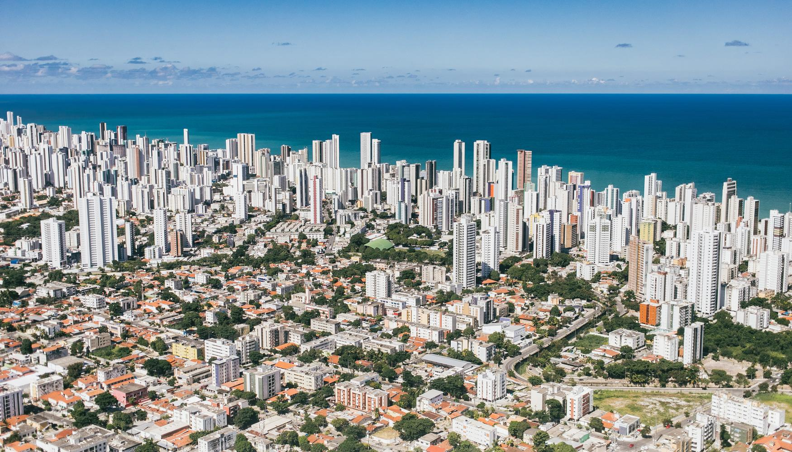

Recife
Recife, a capital de Pernambuco, é uma das cidades mais importantes e turísticas do Nordeste brasileiro. Conhecida como a Veneza Brasileira devido aos seus canais, pontes e rios, Recife é uma cidade que mistura história, cultura e modernidade, atraindo turistas de todo o mundo. A cidade é um centro vibrante de cultura, com uma rica herança colonial, uma vida noturna agitada e uma gastronomia diversificada, representando um dos maiores destinos turísticos da região Nordeste.
Além de sua beleza arquitetônica e histórica, Recife tem uma forte presença no cenário cultural brasileiro, com importantes manifestações musicais, como o frevo e o maracatu, que são celebradas em festivais como o Carnaval de Recife. A cidade também é um ponto de conexão para turistas que visitam outras partes do estado, como as praias de Porto de Galinhas, Olinda e Fernando de Noronha.
Principais pontos turísticos
- Recife Antigo
- Pão de Açúcar
- Instituto Ricardo Brennand
- Museu do Frevo
- Igrejas Barrocas de Recife
- Ilha de Deus e Mercado de São José

O Recife Antigo é o centro histórico da cidade, onde se encontram importantes monumentos, praças e edifícios coloniais. O Marco Zero, localizado na Praça Rio Branco, é o ponto de partida para explorar a área. Entre os destaques estão o Paço do Frevo, o Museu do Frevo, e a Igreja de São José do Ribamar.
Este bairro também abriga o Centro Cultural Judaico, o Teatro de Santa Isabel e o Armazém 13, um local de eventos culturais.
Uma das praias mais famosas de Recife, Boa Viagem é conhecida por suas águas mornas e calmas, além de seu extenso calçadão, ideal para caminhadas e passeios de bicicleta. A praia é cercada por uma infraestrutura de bares e restaurantes, além de ser o local onde se encontram alguns dos melhores hotéis da cidade.

Localizado na Zona Norte de Recife, o Instituto Ricardo Brennand é um complexo cultural que reúne um museu, uma galeria de arte e um castelo. O museu tem um vasto acervo de arte, com destaque para as coleções de armaria, esculturas e pinturas, incluindo obras de artistas renomados. O local também abriga uma bela área de jardins, tornando-se um espaço para lazer e cultura.
Localizado no Centro Cultural Frevo, o Museu do Frevo é dedicado a essa importante manifestação cultural de Pernambuco. O frevo, declarado Patrimônio Cultural Imaterial da Humanidade, é celebrado com exposições sobre sua história, seus principais personagens e o impacto no carnaval de Recife.
As igrejas barrocas do Recife fazem parte do grupo seleto dos melhores exemplos de arquitetura barroca no Brasil, vestígios do glorioso passado da cidade, apesar de nunca ter sido sede do poder real, como Salvador e Rio. Muitas vezes esse valioso acervo, espalhado pelas ruas e pátios do centro, passa despercebido pelo turista que, geralmente, articula a visita entre o Recife Antigo, Instituto Brennand e as praias.
As igrejas barrocas do Recife, como o barroco brasileiro em geral, não seguem à risca o estilo português. O barroco pernambucano é o resultado daquela “miscigenação” cultural e artística que já caracterizava a região em meados do século 17. O barroco foi, na prática, o estilo da reconstrução da cidade depois da devastante guerra contra os holandeses.
O Mercado de São José, um dos maiores e mais antigos mercados públicos de Recife, oferece uma ampla variedade de produtos locais, incluindo artesanato, frutas, especiarias e peixes frescos. Nas proximidades, a Ilha de Deus é uma área popular que mistura vida urbana com cultura tradicional, sendo um ótimo ponto de interação com os moradores e a cultura local.
Principais pontos gastronômicos
- Restaurante Leite
- Localização: Bairro Santo Antônio.
- Ponteio
- Localização: Bairro Boa Viagem.
- Parraxaxá
- Localização: Bairro Casa Forte.
- Pizzaria Capitão Gancho
- Localização: Bairro Boa Viagem.
O Leite é um dos restaurantes mais tradicionais de Recife, fundado em 1882. Localizado no Recife Antigo, o restaurante é especializado em cozinha pernambucana, oferecendo pratos típicos como carne de sol, peixes frescos e o famoso bolo de rolo de sobremesa. O ambiente clássico e elegante torna a experiência gastronômica ainda mais especial.
O restaurante Ponteio é uma churrascaria tradicional de Recife. Com rodízio incluindo mais de 20 cortes de carnes e área kids, o restaurante oferece todo conforto para quem gosta de carnes. É uma boa opção pra quem está em uma conexão longa no aeroporto.
Ambiente familiar e bom atendimento fazem do Ponteio uma ótima experiência gastronômica.

O Parraxaxá é um restaurante típico de Pernambuco, que oferece uma verdadeira imersão na gastronomia local. Com um cardápio recheado de pratos nordestinos como feijoada, tapioca e sarapatel, o restaurante é uma ótima opção para quem deseja experimentar os sabores tradicionais de Recife.
Com espaço temático de pirata, a pizzaria oferece rodízio e pizzas à la carte. Os rodízios acontecem diariamente. Alguns sabores são bem inusitados e durante o rodízio eles oferecem também petiscos como fritas, mini hamburgueres, churros, entre outros. Uma dica é reservar com antecedência! Por ser uma das melhores pizzarias do estado de Pernambuco, principalmente nos fins de semana, ela fica lotada.
Além disso, durante o rodízio é possível curtir um show temático ao vivo feito pelos garçons caracterizados, no mini palco do restaurante.
Principais pontos culturais
- Carnaval de Recife e Olinda
- Localização: Diversos pontos das cidades.
- Teatro de Santa Isabel
- Localização: Bairro Santo Antônio.
- Centro Cultural Banco do Brasil (CCBB)
- Localização: Centro de cidade.
- Centro de Artesanato de Pernambuco
- Localização: Centro da cidade.

O Carnaval de Recife é um dos maiores e mais animados do Brasil, sendo famoso por sua tradição no frevo, maracatu e outras manifestações culturais. Durante o carnaval, a cidade se enche de blocos de rua, desfiles e apresentações de grupos de dança, atraindo milhares de turistas.
Inaugurado em 1850, o Teatro de Santa Isabel é um dos teatros mais importantes do Brasil, com uma arquitetura neoclássica impressionante. O local sedia uma variedade de eventos culturais, como apresentações de óperas, peças teatrais, concertos e balés, sendo um importante centro da cultura recifense.
O CCBB Recife é um centro cultural que promove exposições de arte, teatro, cinema e música. Localizado no Recife Antigo, o CCBB é um excelente espaço para vivenciar a arte e a cultura contemporânea da cidade, com uma programação diversificada ao longo do ano.

O Centro de Artesanato de Pernambuco é um espaço dedicado à venda de produtos artesanais típicos da região. Aqui, os visitantes podem encontrar uma variedade de itens, como rendas, cerâmicas, artesanatos em madeira e roupas típicas, além de poderem aprender sobre as técnicas usadas pelos artesãos locais.